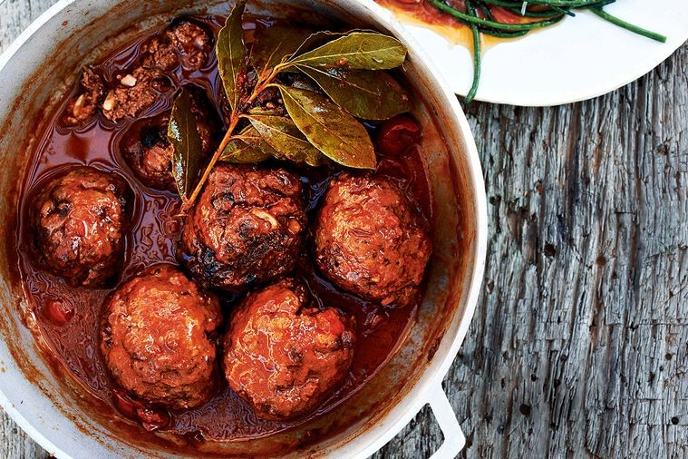

Meatballs
Ingredients
- 800g Ground Beef
- 800g Crushed tomates
- 2 Garlic Cloves
- 2 Onions
- Bread Crumbs
- Butter
- Thyme
- Chili Flakes
- Oregano
- Salt & Pepper
Instructions
First mix the ground beef with the rest of the things. Then fry it in the fyring pan. Then add the crushed tomatoes and mix everything.
Comments
I really liked theese meatballs. I would totally recommend them.
I cooked theese meatballs with my biceps alone. I would recommend doing that for extra salt.
I'm pretty picky with what I eat! But I find this good really good! 10/10 would cook again!